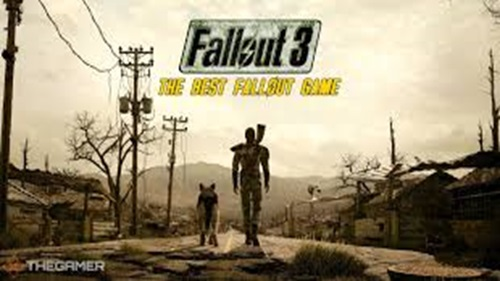
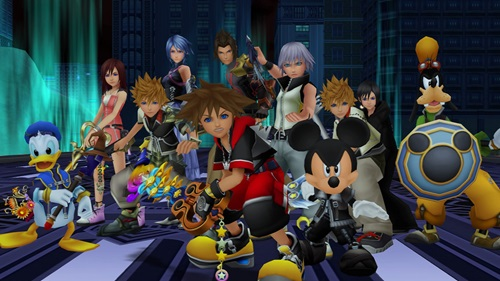
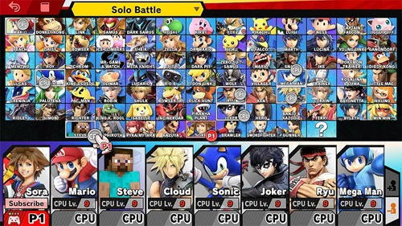

Some of My Favorite Gaming Franchises
Introduction
I have enjoyed video games from a young age. The earliest system I had was a PS2. I have had several systems including wii, switch, ps3,ps4,ps5 as far home consoles go. As far as portable consoles
I had a gameboy sp, ds lite, dsi, and 3ds. I have also had various pcs throughout my life. These systems I have used to enjoy so many games and these are just a few of my favorite francises.
Fallout series

I started this francise in Fallout 3 and have played every game after that aside from Fallout Tactics. I have never gone back and played the first 2 as they are so different gameplay wise
than 3 and onward. A first person rpg open world shooter is very different from an isometric rpg game. I loved this game for the radical choices you can make as a protaganist from being
hero to being the villian and everywhere in between for every quest and that can change what future quests you can do and how the story progresses. The whole francises story is an alternate
history from ours in which they had a nuclear apocolypse and each game is seeing how a different region was impacted by it in the USA and how life is in that area. They have done the capital,
Las Vegas, Boston just to name a few. I was in Boston irl and to actually see real life and compare it to in game was surreal.
Kingdom Hearts

I started this francise in Kingdom Hearts 1 and have played almost every game in the series. The main idea of these games is to have you visit tons of disney worlds and get to explore them
and help the characters get throught the events you saw in the movies while also going throughout these games story. I will admit since these games are all one long interconnected story
it gets very convoluted sometimes but overall it is a very enjoyable part of the series. This is a rpg game so leveling up the protaganist in a the way you want is also enjoyable.
Super Smash Bros.
Smash Bros Site

I started this francise in Super Smash Bros. Brawl and have played every in the francise. I love this series of games as fighting games in general are a lot of fun but I love how Smash
isn't like most fighting games like Street Fighter where I have to stare at a combo screen to learn how to play characters in the best way. Instead there are just 3 different attack
options that when combined with a direction do different attacks. So most characters have a total of 12 moves. With some being the same move in different directions. This game also
has the fun variable where the more damage a character has the further they go so you can't just memorize the same combo on how to do every fight you need to change how you fight a
character based on how much damage they have. The most fun aspect of this game is that it is a huge crossover game where it takes games for many franchises starting from mostly
nintendo back in the original game to today we have 89 characters from tons of games several not even associated with nintendo. I have played this game with so many friends and
have had so many great memories.
End of Page